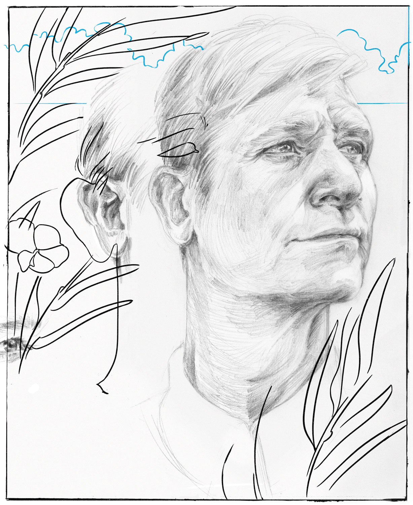
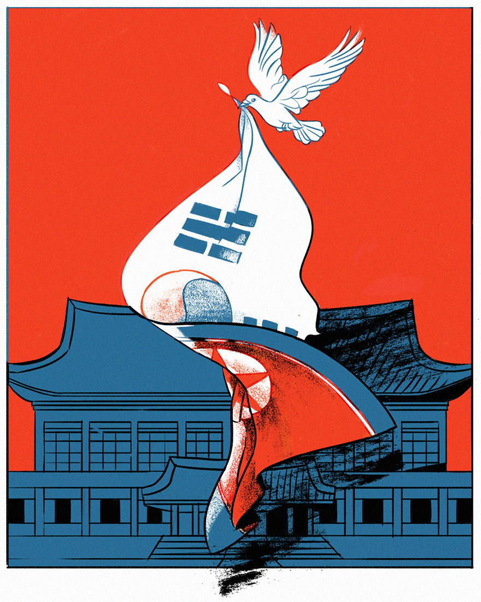
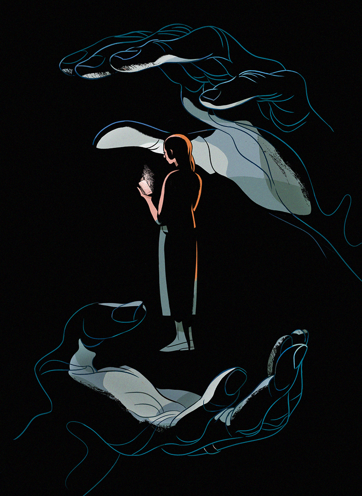
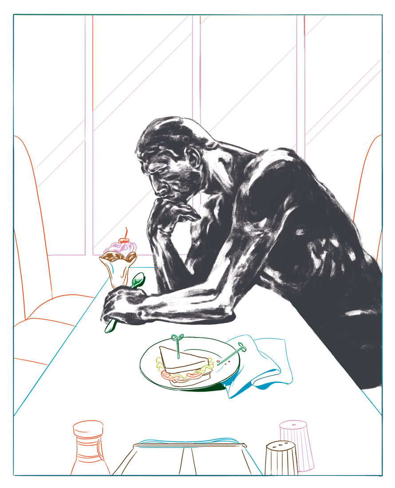
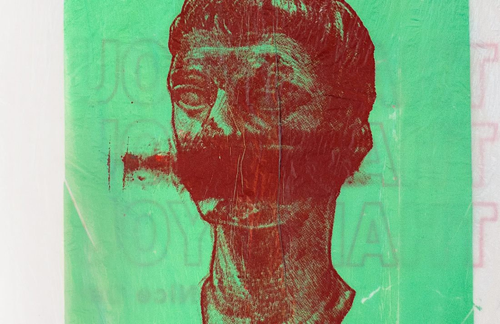

| Title | Kind | Client | Year | Thumbnail |
|---|---|---|---|---|
| Muddy Matterhorn | Illustration (Print) |
The New York Times Book Review | 2020 |  |
| Coronavirus and warped time | Illustration (Print, web) |
The Atlantic | 2020 | |
| Crickets | Illustration (Print, web) |
The New York Times Magazine | 2019 |  |
| Mechanical Failure | Comic | feeeeels | 2019 | |
| Cannon Beach, Oregon, Through the Five Senses | Essay | Here Magazine | 2019 | |
| Istituto Beata Angelina | Essay | Here Magazine | 2019 | |
| How to Design a Book Cover Backwards | Essay | Literary Hub | 2019 | |
| Perry Lane | Essay | Here Magazine | 2019 | |
| Trust | Illustration (Web) |
Medium | 2018 | |
| My Year of Rest and Relaxation | Illustration (Print, web) |
The New York Times Book Review | 2018 | |
| Angst in rock | Illustration (Print, web) |
The Atlantic | 2018 |  |
| Strider Wasilewski | Illustration (Print) |
The Surfer's Journal | 2018 |  |
| French women | Illustration (Print, web) |
The New York Times Magazine | 2018 |  |
| Korean peace | Illustration (Print, web) |
The New York Times, Opinion pages |
2018 |  |
| A Flawless Silence | Illustration (Print, web) |
The New Yorker | 2018 |  |
| David Rockwell | Illustration (Print, web) |
Surface Magazine | 2018 |  |
| Women and wealth | Illustration (Print, web) |
The New York Times Sunday Review | 2018 |  |
| Vivaldi's Winter | Illustration (Print, web) |
The New York Times Magazine | 2018 | |
| Red Clocks | Illustration (Print) |
The New York Times Book Review | 2018 |  |
| On Fear | Personal essay | Desk Lunch | 2018 | |
| In Defense of Generalism | Op-Ed | AIGA Eye on Design | 2018 | |
| Ali Smith | Illustration (Print, web) |
The New Yorker | 2017 |  |
| Winter 2018 | Illustration (Print) |
The Sewanee Review | 2017 |  |
| Exit West | Illustration (Print, web) |
The New York Times Magazine | 2017 |  |
| Fremont Rules | Illustrations (Print, web) |
Lucky Peach | 2017 |  |
| Confessions of a Suburban Restaurant Critic | Illustrations (Print, web) |
Lucky Peach | 2017 |  |
| Porcelain Balloon | Illustrations (Print) |
Look Back and Laugh Books | 2017 |  |
| Matador | Illustration | 2017 |  |
|
| #660033 |
Personal essay | Websafe 2k16 (Curated by Jo Livingstone) |
2016 | |
| The Real | Illustrations (Print) |
La Petite Mort | 2016 |  |
| Lambs | Illustration (Print) |
Mary Review | 2016 |  |
| Drawings | Art | 2015–present |  |
|
| Dear Reader | Illustrations (Print) |
The New York Times Magazine | 2015—17 |  |
| 24/7 | Art | 2014 |  |
|
| Disrupt | Art | 2013 |  |
|
| Brought to You By | Art | 2013 |  | |
| Unicorn | Illustration (Apparel) |
Threadless | 2013 |  |